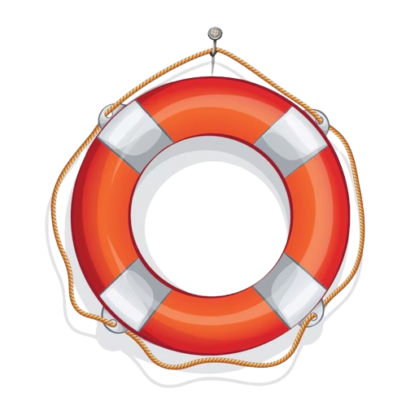
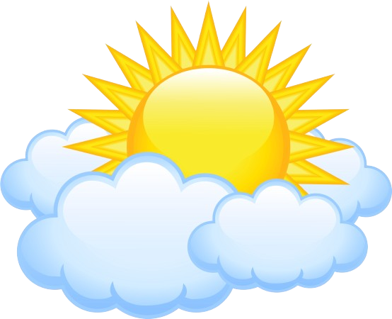
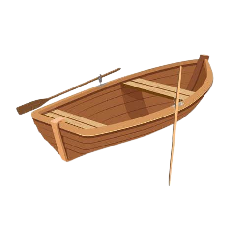

←
Meteorologia
Segurança Marítima
  
Manter uma vigilância constante
dos seus arredores;
Estudar a previsão meteorológica previamente;
Evitar ir sozinho para águas abertas;
Se começar a sentir cãibras ou frio, saia da água.
Condições Meteorológicas
A carregar temperatura...
A carregar condições...
A carregar vento...